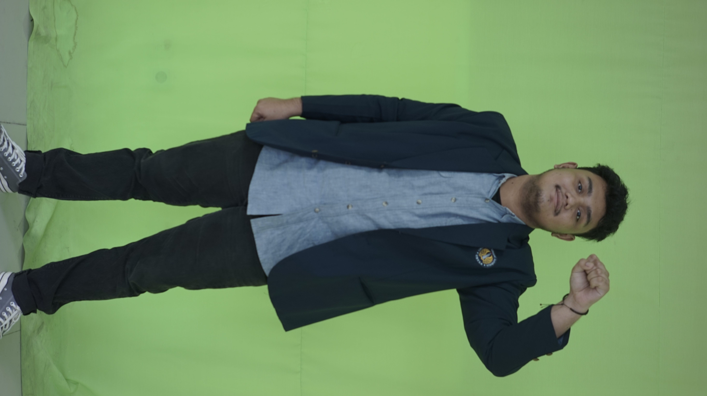

Muhammad Nadir Raihan

Tentang Saya
Saya Muhammad Nadir Raihan, Saya sedang berkuliah di Universitas Negeri Surabaya, Program Studi S1 Teknik Informatika. Etos Kerja, Disiplin,
Jujur dan Bertanggung Jawab selalu saya utamakan dalam menyelesaikan setiap pekerjaan. Saya memiliki pengalaman kerja, memiliki semangat
tinggi, mudah beradaptasi, serta tertarik mempelajari hal baru
Keahlian Saya
- Android Developer
- UI/UX Designer
- FrontEnd Developer
Pendidikan Saya
- 2007 - 2013 SD Negeri Barata Jaya Surabaya
- 2013 - 2016 SMP Negeri 12 Surabaya
- 2016 - 2019 SMA Negeri 10 Surabaya
- 2019 - Sekarang Fakultas Teknik,Teknik Informatika Universitas Negeri Surabaya
Kontak Saya
Facebook |
Instagram |
Tiktok